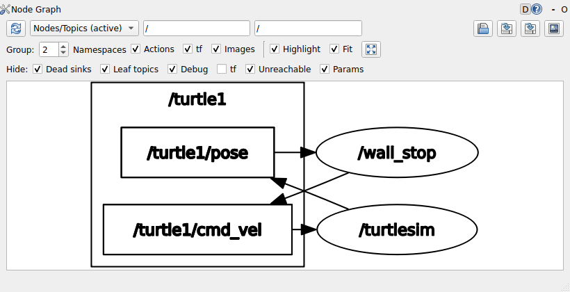
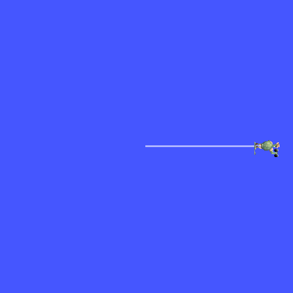
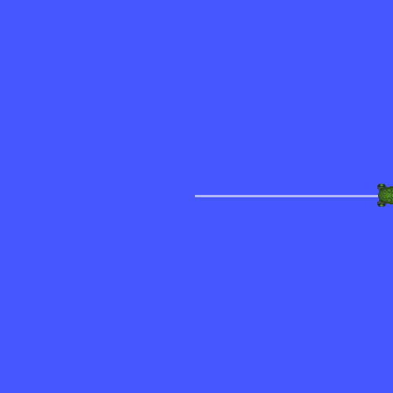

토픽 프로그래밍 — 발행자·구독자·타이머
- 내 노드가
/turtle1/cmd_vel에 속도 명령을 보내려면 코드에 무엇이 있어야 하나? - 「0.1초마다 한 번」을 코드로는 어떻게 적나?
while과sleep으로 적으면 무엇이 안 되나? - 받은 메시지는 콜백에서 어떤 모양으로 받아 두나? 왜
ConstSharedPtr인가? - 달리는 중에 내 노드를 Ctrl+C로 끊으면 거북이는 서나, 마지막 속도로 계속 가나?
- AI가 준 노드 코드가 빌드도 되고 실행도 되는데 거북이가 벽에 부딪힌다. 무엇부터 보면 되나?
19회에 만든 hello_node는 그래프에 이름만 올렸을 뿐 어느 화살표에도 이어져 있지 않았다.
오늘은 같은 패키지 turtle_drive에 실행 파일을 하나 더 넣는다. 이름은 wall_stop —
거북이를 앞으로 몰다가 앞에 벽이 가까워지면 세우는 노드다.
7회에 만든 「정면 장애물 판정기」를 기억하는 사람도 있을 것이다. 그때는 숫자 배열을 보고 판정만 했고, 오늘은 판정한 결과로 실제로 거북이를 세운다.
기말 프로젝트의 「콘 앞에서 선다」가 정확히 이 모양이다. 거북이의 자세가 라이다 값으로 바뀔 뿐이다.
노드는 세 단계로 자란다. v1은 0.1초마다 「앞으로 가라」를 보내기만 한다(발행자·타이머).
v2는 거북이의 자세를 받아 들고 있는다(구독자). v3는 받은 자세로 벽까지 거리를 재서 가까우면 「서라」를 보낸다.
19회 끝에서 예고한 대로, 오늘 쓰는 콜백은 전부 rclcpp::spin 안에서 불린다. 이것이 왜 중요한지는 ⑩절에서 AI가 준 코드가 보여 준다.
그리고 이 회차의 몸통은 ⑩절이다. 「벽 앞에서 서는 노드를 만들어 줘」라고 하면 돌아오는 그럴듯한 코드를 하나 놓고,
11·12·13회에서 쌓은 검사 목록으로 한 줄씩 훑는다. 그 코드는 빌드되고 실행되는데, 거북이는 벽에 부딪히고, Ctrl+C를 누르면 Segmentation fault가 난다.
왜 그런지를 ①~⑨절에서 배운 것으로 짚을 수 있으면 오늘의 목표에 닿은 것이다.
한 장 요약
무엇을 먼저 볼지: 오른쪽 열이 받은 노드 코드를 검사할 때 보는 기준이다. 가운데 열은 그것이 코드에서 어떻게 생겼는지다.
| 용어 | 코드에서 이렇게 보인다 | 이것만 알면 된다 |
|---|---|---|
콜백(callback) · rclcpp::spin | rclcpp::spin(node); | 타이머·구독 콜백은 spin 안에서만 불린다. spin이 없으면 구독은 붙어 있어도 콜백이 안 불린다 |
| 발행자(publisher) | create_publisher<geometry_msgs::msg::Twist>("/turtle1/cmd_vel", 10) | 토픽 이름과 메시지 타입을 정해 만들고, publish(msg)로 보낸다. 노드의 멤버로 들고 있는다 |
| 타이머(timer) | create_wall_timer(100ms, [this]() { on_timer(); }) | 「주기마다 할 일」은 while + sleep이 아니라 타이머로 적는다 |
| 구독자(subscription) | create_subscription<turtlesim::msg::Pose>("/turtle1/pose", 10, 콜백) | 메시지가 올 때마다 콜백이 불린다. 콜백은 받아 두기만 하고, 판단은 타이머 쪽에서 한다 |
ConstSharedPtr | void on_pose(turtlesim::msg::Pose::ConstSharedPtr msg) | std::shared_ptr<const Pose>의 타입 별칭. 복사 없이, 고치지 못하게 받고, 그대로 멤버에 들고 있을 수 있다 |
| 큐 깊이(depth) | …("/turtle1/cmd_vel", 10) | 밀렸을 때 쌓아 둘 메시지 수. 보통 10. 뜻을 모르고 1000·1로 바꾸지 않는다 (22회) |
| 의존성 두 곳 | <depend>turtlesim</depend> · ${turtlesim_TARGETS} | 메시지 패키지도 19회 규칙 그대로 package.xml과 CMakeLists.txt 양쪽에 |
| cmd_vel 타임아웃 | (turtlesim 쪽의 규칙) | turtlesim은 속도 명령이 약 1초 끊기면 거북이를 세운다. 그 1초 동안은 마지막 속도로 간다 |
spin이 때가 됐을 때 불러 준다」는 같은 구조다.
이 구조를 알면 ⑩절의 받은 코드에서 구독 콜백이 왜 한 번도 안 불렸는지가 한 줄로 설명된다.
① wall_stop과 두 토픽 — /turtle1/cmd_vel · /turtle1/pose 🔴 사람이 한다
코드를 쓰기 전에 무엇을 보내고 무엇을 받을지부터 정해야 한다. 토픽 이름이 하나만 틀려도 노드는 멀쩡히 돌면서 아무 일도 하지 않는다(18회 「막혔을 때 보는 순서」). 그래서 첫 일은 18회 명령으로 토픽 이름과 타입을 직접 확인하는 것이다. turtlesim을 띄우고 다른 터미널에서 친다.
$ ros2 topic list -t
/parameter_events [rcl_interfaces/msg/ParameterEvent]
/rosout [rcl_interfaces/msg/Log]
/turtle1/cmd_vel [geometry_msgs/msg/Twist]
/turtle1/color_sensor [turtlesim/msg/Color]
/turtle1/pose [turtlesim/msg/Pose]
$ ros2 interface show turtlesim/msg/Pose
float32 x
float32 y
float32 theta
float32 linear_velocity
float32 angular_velocity
$ ros2 topic echo --once /turtle1/pose
x: 5.544444561004639
y: 5.544444561004639
theta: 0.0
linear_velocity: 0.0
angular_velocity: 0.0
---
거북이는 (5.54, 5.54)에서 theta 0, 즉 오른쪽(+x)을 보고 태어난다. 그대로 앞으로 가면 오른쪽 벽에 닿는다.
17회에서 인터페이스 이름 세 토막이 그대로 C++ 헤더와 타입 이름이 된다고 했다. 오늘 쓸 두 메시지를 그 규칙으로 옮기면 이렇다.
| 토픽 | 인터페이스 | C++ 헤더 | C++ 타입 | wall_stop에서 |
|---|---|---|---|---|
/turtle1/cmd_vel | geometry_msgs/msg/Twist | "geometry_msgs/msg/twist.hpp" | geometry_msgs::msg::Twist | 보낸다 (v1부터) |
/turtle1/pose | turtlesim/msg/Pose | "turtlesim/msg/pose.hpp" | turtlesim::msg::Pose | 받는다 (v2부터) |
ls /opt/ros/jazzy/include/turtlesim/turtlesim/msg/에 pose.hpp가, …/geometry_msgs/geometry_msgs/msg/에 twist.hpp가 있다.
AI가 준 코드의 #include 줄이 이 표와 다르면(예: turtlesim/Pose.h) ROS 1 시절 이름이다(17회).
세 단계에서 무엇이 더해지는지 먼저 한 표로 본다.
| 단계 | 더하는 것 | 거북이는 | 새 의존성 |
|---|---|---|---|
| v1 (④절) | 발행자 · 타이머 | 오른쪽으로 곧장 가서 벽에 붙는다 | geometry_msgs |
| v2 (⑥절) | 구독자 · 받은 자세를 멤버에 | 똑같이 벽에 붙는다. 대신 자기가 어디 있는지 안다 | turtlesim |
| v3 (⑧절) | 앞 벽까지 거리로 판정 | 벽 앞 1 m에서 선다 | — |
② 콜백(callback)과 rclcpp::spin 🔴 사람이 한다
개념 — 함수를 넘겨 두면 때가 됐을 때 불러 준다
「0.1초마다 명령을 보낸다」, 「자세가 오면 받아 둔다」 — 이것을 어떻게 적을까? 2부까지의 프로그램은 위에서 아래로 한 줄씩 내려가며 일을 했다. 그런데 메시지는 언제 올지 내가 정하지 못한다. 기다렸다가 오면 처리해야 한다.
그래서 ROS 2는 거꾸로 묻는다. 「이 일이 생기면 무엇을 할지 함수로 미리 넘겨 달라. 때가 되면 내가 부르겠다.」
이렇게 넘겨 두었다가 나중에 불리는 함수를 콜백(callback, 「나중에 다시 불러 준다」)이라고 한다.
14회에서 「저장해 뒀다가 나중에 부르는 람다」를 봤는데, 그것이 바로 콜백이다.
그리고 때가 됐는지 살피다가 콜백을 부르는 일을 하는 것이 19회의 rclcpp::spin이다.
| 무엇이 생기면 | 누가 불리나 | 오늘 만드는 것 |
|---|---|---|
| 정해 둔 시간이 지났다 | 타이머 콜백 | on_timer() — 0.1초마다. 판단하고 속도 명령을 보낸다 |
| 구독한 토픽에 메시지가 왔다 | 구독 콜백 | on_pose(msg) — 초당 62.5번(18회 hz). 받은 자세를 들고 있는다 |
int main(int argc, char ** argv)
{
rclcpp::init(argc, argv);
auto node = std::make_shared<WallStop>(); // 생성자에서 발행자·구독자·타이머를 만들고 콜백을 넘긴다
rclcpp::spin(node); // 여기서 기다리다가 일이 생길 때마다 콜백을 부른다
rclcpp::shutdown();
return 0;
}spin 안에서만 불린다. 메시지가 컴퓨터에 도착해도 spin이 돌지 않으면 아무도 그 콜백을 부르지 않는다.
둘째, 기본 rclcpp::spin은 콜백을 한 번에 하나씩 부른다. 한 콜백이 오래 걸리면 다른 콜백이 그만큼 기다린다 — 그래서 콜백은 짧게 쓴다. 이 기다림이 실제로 얼마나 되는지는 22회에서 시간을 재어 본다.
19회 v3의 로그에서 「spin 에 들어갑니다」와 「signal_handler」 사이가 3초쯤 비어 있었다. 그때는 부를 콜백이 없어서 그냥 기다리기만 했다.
오늘은 그 빈 구간에서 타이머 콜백이 0.1초마다, 구독 콜백이 0.016초마다 불린다.
③ 발행자(publisher) — create_publisher와 publish 🟡 맡기되 검사
개념 — 토픽 하나에 보내는 창구
17회에서 토픽은 「발행자가 보내고 구독자가 받는, 이름 붙은 데이터 흐름」이었다. 코드에서 발행자는 그 흐름에 메시지를 넣는 객체다.
토픽 이름 하나와 메시지 타입 하나로 만들고, 만든 뒤에는 그 타입의 메시지만 넣을 수 있다.
18회 ros2 topic pub이 터미널에서 하던 일을 코드가 하는 것이다.
// 만들 때 — 노드의 멤버 함수로 만든다. 꺾쇠 안이 메시지 타입, 괄호 안이 토픽 이름과 큐 깊이
cmd_pub_ = this->create_publisher<geometry_msgs::msg::Twist>("/turtle1/cmd_vel", 10);
// 보낼 때 — 메시지 객체를 만들어 칸을 채우고 넘긴다
geometry_msgs::msg::Twist cmd;
cmd.linear.x = 1.0;
cmd_pub_->publish(cmd);발행자는 노드가 살아 있는 동안 계속 있어야 한다. 그래서 생성자의 지역 변수가 아니라 클래스의 멤버 변수로 들고 있는다. 19회 v3에서 인사말을 멤버로 옮기며 「20회에서 발행자가 이 자리에 들어간다」고 한 것이 이것이다. 생성자 안의 지역 변수에 두면 생성자가 끝나는 순간 발행자가 사라지고, 토픽에서도 빠진다.
| 칸 | 모양 | 무엇을 보나 |
|---|---|---|
| 메시지 타입 | <geometry_msgs::msg::Twist> | ros2 topic list -t의 타입과 같은가 (①절 표) |
| 토픽 이름 | "/turtle1/cmd_vel" | ros2 topic list에 있는 이름과 한 글자도 안 틀리게 같은가 |
| 큐 깊이 | 10 | 10이면 된다. 다른 숫자라면 이유가 있는가 (아래 🆕) |
| 받는 변수 | cmd_pub_ (멤버) | 전역 변수나 생성자 지역 변수가 아닌가 |
🆕 이 코드에서 처음 나오는 것
- this->create_publisher<T>("토픽", 10)
rclcpp::Node에서 물려받은 멤버 함수. T 타입 메시지를 그 토픽에 보내는 발행자를 만들어shared_ptr로 돌려준다. 꺾쇠 안은 7회의 템플릿 인자다. 여기서는/turtle1/cmd_vel에Twist를 보내는 발행자를 만들었다.- 큐 깊이 10 (history depth)
- 보내는 쪽이나 받는 쪽이 밀렸을 때 최근 메시지를 몇 개까지 쌓아 둘지다. 넘치면 오래된 것부터 버린다. 인터넷 예제에 자주 보이는
rclcpp::QoS(rclcpp::KeepLast(10))는 이것을 풀어 쓴 모양이다. 18회topic info -v의History (Depth)칸이 이것이다. 속도 명령은 최신 것만 의미가 있으니 크게 둘 이유가 없다. - cmd_pub_->publish(cmd)
- 메시지 하나를 토픽에 내보낸다. 18회
topic pub의publishing #1처럼 「보냈다」는 뜻이지 「누가 받았다」는 뜻이 아니다. 받았는지는 받는 쪽(거북이)을 본다. - rclcpp::Publisher<T>::SharedPtr
- 발행자를 들고 있는 멤버의 타입. 11회에서 본 타입 별칭
SharedPtr— 실제로는std::shared_ptr<rclcpp::Publisher<T>>다.
큐 깊이와 QoS를 제대로 다루는 곳: 22회
④ 타이머(timer) — create_wall_timer (v1) 🟡 맡기되 검사
개념 — 주기마다 콜백을 부르는 객체
발행자는 만들었는데 언제 publish를 부를까? 생성자에서 한 번 부르고 끝내면 안 될까?
18회에서 topic pub --once로 한 번 보냈을 때 거북이가 짧은 호를 그리고 멈췄다. turtlesim은 속도 명령이 1초 넘게 안 오면 거북이를 세운다.
거북이를 계속 가게 하려면 명령을 계속, 일정한 간격으로 보내야 한다.
「일정한 간격으로」를 2부 방식으로 적으면 while 반복 안에 sleep을 넣는 모양이 된다. 그런데 ②절의 규칙을 떠올려 보면 문제가 보인다.
while이 main을 붙잡고 있으면 spin에 들어가지 못하고, 그러면 구독 콜백이 불릴 자리가 없다.
13회의 원칙 「이미 있는 것을 먼저 찾는다」를 여기에 적용하면 답이 나온다 — 주기마다 콜백을 불러 주는 것은 ROS 2에 이미 있다. 그것이 타이머다.
// 주기와 콜백을 넘겨 만든다. 이 객체가 살아 있는 동안 spin 이 주기마다 콜백을 부른다
timer_ = this->create_wall_timer(100ms, [this]() { on_timer(); });while + sleep_for | create_wall_timer | |
|---|---|---|
| 주기는 누가 지키나 | 내 반복문 | spin |
| 그동안 구독 콜백은 | 안 불린다 (반복문 안에서 따로 불러 주지 않는 한) | 사이사이에 불린다 |
| Ctrl+C를 누르면 | 반복 조건에 rclcpp::ok()가 있어야 끝난다 | spin이 돌아온다 |
| 주기를 바꾸려면 | 반복문 안을 고친다 | 숫자 하나(100ms)를 고친다 |
while 방식으로도 발행은 된다. 그래서 v1만 놓고 보면 차이가 안 보인다.
차이는 구독이 더해지는 v2에서 드러나고, ⑩절의 받은 코드가 정확히 이 자리에서 무너진다.
예제에 적용 — src/wall_stop.cpp를 새로 만든다
19회 패키지에 실행 파일을 하나 더한다. 소스 이름은 실행 파일 이름과 같게 wall_stop.cpp로 짓는다.
Twist를 쓰므로 의존성 geometry_msgs가 하나 늘고, 19회 ⑩절 규칙대로 package.xml과 CMakeLists.txt 양쪽에 넣는다.
hello_node는 그대로 둔다.
1단계 (v1) — 발행자와 타이머
// 20회 벽 앞 정지 — v1 (1단계: create_publisher · create_wall_timer — 거북이가 직진한다)
#include <chrono>
#include <memory>
#include "rclcpp/rclcpp.hpp"
#include "geometry_msgs/msg/twist.hpp"
using namespace std::chrono_literals;
class WallStop : public rclcpp::Node
{
public:
WallStop()
: Node("wall_stop")
{
cmd_pub_ = this->create_publisher<geometry_msgs::msg::Twist>("/turtle1/cmd_vel", 10);
timer_ = this->create_wall_timer(100ms, [this]() { on_timer(); });
RCLCPP_INFO(this->get_logger(), "0.1초마다 /turtle1/cmd_vel 에 직진 명령을 보냅니다");
}
private:
// 타이머가 0.1초마다 부른다
void on_timer()
{
geometry_msgs::msg::Twist cmd; // 여섯 칸이 전부 0 으로 시작한다
cmd.linear.x = 1.0; // 앞으로 1 m/s
cmd_pub_->publish(cmd);
}
rclcpp::Publisher<geometry_msgs::msg::Twist>::SharedPtr cmd_pub_;
rclcpp::TimerBase::SharedPtr timer_;
};
int main(int argc, char ** argv)
{
rclcpp::init(argc, argv);
auto node = std::make_shared<WallStop>();
rclcpp::spin(node); // 타이머 콜백은 이 안에서 불린다
rclcpp::shutdown();
return 0;
}🆕 이 코드에서 처음 나오는 것
- this->create_wall_timer(100ms, 콜백)
- 주기(14회의
100ms표기)마다 콜백을 부르는 타이머를 만든다. 이름의 wall은 벽이 아니라 벽시계(wall clock), 곧 실제 흐르는 시간이라는 뜻이다. 오늘 노드 이름의 「벽」과는 상관이 없다. 여기서는 0.1초마다on_timer()를 부르게 했다. - [this]() { on_timer(); }
- 14회의 람다와
[this]캡처다. 14회 표에서 「저장해 뒀다가 나중에 부르는 람다는 가리키던 것이 먼저 사라질 수 있으니 조심」이라고 했는데, 여기서는 괜찮다. 이 람다를 들고 있는 타이머가 이 노드의 멤버라서, 노드(this)보다 먼저 사라질 수 없기 때문이다. - rclcpp::TimerBase::SharedPtr
- 타이머를 들고 있는 멤버의 타입. 발행자와 같은 이유로 멤버여야 한다 — 이 객체가 사라지면 타이머도 멈춘다.
- geometry_msgs::msg::Twist cmd;
- 메시지도 그냥 C++ 구조체다. 만들면 숫자 칸이 전부 0으로 채워진다. 17회에서 본 여섯 칸 중
linear.x하나만 1.0으로 바꿨다 — 「앞으로 1 m/s, 회전 없음」.
find_package(rclcpp REQUIRED)
# 19회 — 실행 파일 hello_node 를 만들고 rclcpp 를 붙인다 (8회와 같은 두 줄)
add_executable(hello_node src/hello_node.cpp)
target_link_libraries(hello_node PRIVATE rclcpp::rclcpp)
# 만든 실행 파일을 ros2 run 이 찾는 자리에 설치한다
install(TARGETS hello_node
DESTINATION lib/${PROJECT_NAME})find_package(rclcpp REQUIRED)
find_package(geometry_msgs REQUIRED)
# 19회 — 실행 파일 hello_node 를 만들고 rclcpp 를 붙인다 (8회와 같은 두 줄)
add_executable(hello_node src/hello_node.cpp)
target_link_libraries(hello_node PRIVATE rclcpp::rclcpp)
# 20회 — 실행 파일 wall_stop. Twist 메시지를 쓰므로 geometry_msgs 도 붙인다
add_executable(wall_stop src/wall_stop.cpp)
target_link_libraries(wall_stop PRIVATE rclcpp::rclcpp ${geometry_msgs_TARGETS})
# 만든 실행 파일을 ros2 run 이 찾는 자리에 설치한다
install(TARGETS hello_node wall_stop
DESTINATION lib/${PROJECT_NAME}) <depend>rclcpp</depend> <depend>rclcpp</depend>
<depend>geometry_msgs</depend>🆕 이 파일에서 처음 나오는 것
- ${geometry_msgs_TARGETS}
- 메시지 패키지를 붙이는 모양.
rclcpp는rclcpp::rclcpp라는 타깃 하나였는데, 메시지 패키지는 C++·C 등 언어별 타깃이 여럿이라find_package(geometry_msgs)가 그 목록을geometry_msgs_TARGETS라는 변수에 담아 둔다.${…}는 8회의 CMake 변수 읽기다. 19회 ⑤절 프롬프트의 「${패키지_TARGETS}모양」이 이것이다. - install(TARGETS hello_node wall_stop …)
- 실행 파일이 늘면 이 줄에 이름을 더한다. 빠뜨리면 19회 ⑨절 ②의
No executable found를 다시 만난다.
실제로 나온 출력
$ cd ~/ros2_ws
$ colcon build --packages-select turtle_drive
Starting >>> turtle_drive
Finished <<< turtle_drive [4.16s]
Summary: 1 package finished [4.24s]
$ source install/setup.bash
$ ros2 pkg executables turtle_drive
turtle_drive hello_node
turtle_drive wall_stop실행 파일이 둘이 됐다. 터미널 1에 turtlesim을 띄우고, 터미널 2에서 wall_stop을 띄운다.
$ ros2 run turtle_drive wall_stop
[INFO] [1792273484.698376223] [wall_stop]: 0.1초마다 /turtle1/cmd_vel 에 직진 명령을 보냅니다노드가 찍는 것은 이 한 줄뿐이다. 거북이는 오른쪽으로 곧장 가서 5~6초 뒤 벽에 닿는다. 그 순간 turtlesim 쪽 터미널에 이런 줄이 쏟아진다.
[WARN] [1792273515.564891203] [turtlesim]: Oh no! I hit the wall! (Clamping from [x=11.096445, y=5.544445])
[WARN] [1792273515.580509134] [turtlesim]: Oh no! I hit the wall! (Clamping from [x=11.104889, y=5.544445])
(… 같은 줄이 초당 60번쯤 계속 …)
「벽에 부딪혔다. 위치를 벽 안쪽으로 잘라 둔다(clamping)」는 경고다. 우리 노드는 벽을 모르니 계속 「앞으로」를 보내고, turtlesim은 그때마다 거북이를 벽에 붙여 둔다.
경고가 초당 60여 줄인 것은 turtlesim이 거북이를 초당 62.5번 움직이기 때문이다(18회 hz /turtle1/pose의 그 숫자).
벽에 붙는 x는 11.0889다. turtlesim 창의 한 변이 그만큼이라는 뜻이고, v3에서 이 숫자를 쓴다.
전체 코드 — turtle_drive/ (1단계 · v1. hello_node.cpp 는 19회 그대로)
빌드해서 돌리는 법: cd ~/ros2_ws && colcon build --packages-select turtle_drive && source install/setup.bash && ros2 run turtle_drive wall_stop
// 20회 벽 앞 정지 — v1 (1단계: create_publisher · create_wall_timer — 거북이가 직진한다)
#include <chrono>
#include <memory>
#include "rclcpp/rclcpp.hpp"
#include "geometry_msgs/msg/twist.hpp"
using namespace std::chrono_literals;
class WallStop : public rclcpp::Node
{
public:
WallStop()
: Node("wall_stop")
{
cmd_pub_ = this->create_publisher<geometry_msgs::msg::Twist>("/turtle1/cmd_vel", 10);
timer_ = this->create_wall_timer(100ms, [this]() { on_timer(); });
RCLCPP_INFO(this->get_logger(), "0.1초마다 /turtle1/cmd_vel 에 직진 명령을 보냅니다");
}
private:
// 타이머가 0.1초마다 부른다
void on_timer()
{
geometry_msgs::msg::Twist cmd; // 여섯 칸이 전부 0 으로 시작한다
cmd.linear.x = 1.0; // 앞으로 1 m/s
cmd_pub_->publish(cmd);
}
rclcpp::Publisher<geometry_msgs::msg::Twist>::SharedPtr cmd_pub_;
rclcpp::TimerBase::SharedPtr timer_;
};
int main(int argc, char ** argv)
{
rclcpp::init(argc, argv);
auto node = std::make_shared<WallStop>();
rclcpp::spin(node); // 타이머 콜백은 이 안에서 불린다
rclcpp::shutdown();
return 0;
}cmake_minimum_required(VERSION 3.8)
project(turtle_drive)
if(CMAKE_COMPILER_IS_GNUCXX OR CMAKE_CXX_COMPILER_ID MATCHES "Clang")
add_compile_options(-Wall -Wextra -Wpedantic)
endif()
# find dependencies
find_package(ament_cmake REQUIRED)
find_package(rclcpp REQUIRED)
find_package(geometry_msgs REQUIRED)
# 19회 — 실행 파일 hello_node 를 만들고 rclcpp 를 붙인다 (8회와 같은 두 줄)
add_executable(hello_node src/hello_node.cpp)
target_link_libraries(hello_node PRIVATE rclcpp::rclcpp)
# 20회 — 실행 파일 wall_stop. Twist 메시지를 쓰므로 geometry_msgs 도 붙인다
add_executable(wall_stop src/wall_stop.cpp)
target_link_libraries(wall_stop PRIVATE rclcpp::rclcpp ${geometry_msgs_TARGETS})
# 만든 실행 파일을 ros2 run 이 찾는 자리에 설치한다
install(TARGETS hello_node wall_stop
DESTINATION lib/${PROJECT_NAME})
if(BUILD_TESTING)
find_package(ament_lint_auto REQUIRED)
# the following line skips the linter which checks for copyrights
# comment the line when a copyright and license is added to all source files
set(ament_cmake_copyright_FOUND TRUE)
# the following line skips cpplint (only works in a git repo)
# comment the line when this package is in a git repo and when
# a copyright and license is added to all source files
set(ament_cmake_cpplint_FOUND TRUE)
ament_lint_auto_find_test_dependencies()
endif()
ament_package()<?xml version="1.0"?>
<?xml-model href="http://download.ros.org/schema/package_format3.xsd" schematypens="http://www.w3.org/2001/XMLSchema"?>
<package format="3">
<name>turtle_drive</name>
<version>0.0.0</version>
<description>로봇공학 3부 실습 — turtlesim 거북이를 움직이는 노드를 모은 패키지</description>
<maintainer email="student@example.com">Student Name</maintainer>
<license>MIT</license>
<buildtool_depend>ament_cmake</buildtool_depend>
<depend>rclcpp</depend>
<depend>geometry_msgs</depend>
<test_depend>ament_lint_auto</test_depend>
<test_depend>ament_lint_common</test_depend>
<export>
<build_type>ament_cmake</build_type>
</export>
</package>⑤ 내 노드의 발행 확인 — ros2 topic echo · hz · info -v 🔴 사람이 한다
거북이가 움직였으니 된 것일까? 이번에는 거북이가 움직여서 알았지만, 실물 로봇에서는 바퀴가 안 돌 때 내 노드가 안 보낸 것인지, 로봇이 안 받은 것인지부터 갈라야 한다.
18회에 배운 명령을 이번에는 직접 만든 노드에 그대로 대 본다. wall_stop이 도는 동안 터미널 3에서 친다.
$ ros2 node list
/turtlesim
/wall_stop
$ ros2 topic echo --once /turtle1/cmd_vel
linear:
x: 1.0
y: 0.0
z: 0.0
angular:
x: 0.0
y: 0.0
z: 0.0
---
$ ros2 topic hz /turtle1/cmd_vel
average rate: 9.999
min: 0.100s max: 0.100s std dev: 0.00019s window: 11
average rate: 10.000
min: 0.100s max: 0.100s std dev: 0.00016s window: 22| 명령 | 보이는 것 | 코드의 어느 줄과 맞춰 보나 |
|---|---|---|
node list | /wall_stop | : Node("wall_stop") |
echo --once | linear.x: 1.0, 나머지 0 | cmd.linear.x = 1.0; |
hz | average rate: 10.000, min·max 모두 0.100초 | create_wall_timer(100ms, …) |
hz /turtle1/cmd_vel은 아무것도 안 찍었다. 지금은 10.000 — 일정하게 보내는 쪽이 생겼기 때문이다. min과 max가 같으니 간격도 고르다.
누가 보내고 누가 받는지는 info -v로 본다(일부 줄은 생략했다).
$ ros2 topic info -v /turtle1/cmd_vel
Type: geometry_msgs/msg/Twist
Publisher count: 1
Node name: wall_stop
Node namespace: /
Topic type: geometry_msgs/msg/Twist
Endpoint type: PUBLISHER
QoS profile:
Reliability: RELIABLE
History (Depth): UNKNOWN
(… 생략 …)
Subscription count: 1
Node name: turtlesim
Node namespace: /
Topic type: geometry_msgs/msg/Twist
Endpoint type: SUBSCRIPTION
QoS profile:
Reliability: RELIABLE
(… 생략 …)
18회에서는 보내는 쪽이 teleop_turtle이었는데, 지금은 wall_stop이다. 받는 쪽은 그대로 turtlesim.
양쪽 Reliability가 둘 다 RELIABLE이라 붙는다 — create_publisher에 숫자 10만 넘기면 이 값이 기본이다.
History (Depth)가 UNKNOWN으로 나오는 것은 큐 깊이가 노드끼리 서로 알려 주는 정보에 들어 있지 않아서이고, 우리가 넣은 10이 사라진 것은 아니다.
「판단은 내가 할게」를 넣는 이유가 있다. 확인을 통째로 맡기면 「정상적으로 발행되고 있습니다」 한 줄이 돌아오기 쉽다. 10.000이라는 숫자를 100ms와 맞춰 보는 일은 여러분이 합니다.
⑥ 구독자(subscription)와 ConstSharedPtr (v2) 🔴 사람이 한다
개념 — 메시지가 올 때마다 불리는 콜백
벽 앞에서 서려면 먼저 거북이가 어디 있는지 알아야 한다. turtlesim은 그것을 /turtle1/pose로 초당 62.5번 내보내고 있다.
그 토픽을 받는 객체가 구독자다. 발행자처럼 토픽 이름과 타입으로 만들고, 여기에 메시지가 오면 부를 콜백을 하나 더 넘긴다.
pose_sub_ = this->create_subscription<turtlesim::msg::Pose>(
"/turtle1/pose", 10,
[this](turtlesim::msg::Pose::ConstSharedPtr msg) { on_pose(msg); });
그럼 콜백은 메시지를 어떤 모양으로 받을까? rclcpp는 몇 가지 모양을 다 받아 준다. 그래서 받은 코드마다 모양이 다르다.
12회에서 「읽기만 할 인자는 const &로 받는다」를 배웠고, 11회에서 shared_ptr를 배웠다. 그 둘로 아래 표를 읽을 수 있다.
| 콜백 인자의 모양 | 콜백마다 메시지 복사 | 받은 메시지를 고칠 수 있나 | 멤버에 들고 있으려면 |
|---|---|---|---|
turtlesim::msg::Pose msg (값 전달) | 한 번 (12회의 값 전달) | 사본은 고칠 수 있다 | 사본을 한 번 더 복사 |
const turtlesim::msg::Pose & msg | 없다 | 없다 | 복사해야 한다 — 콜백이 끝나면 참조가 가리키던 것을 쓸 수 없다 |
turtlesim::msg::Pose::SharedPtr msg | 없다 | 있다 | 포인터만 들고 있으면 된다 |
turtlesim::msg::Pose::ConstSharedPtr msg | 없다 | 없다 | 포인터만 들고 있으면 된다 |
ConstSharedPtr는 std::shared_ptr<const turtlesim::msg::Pose>의 타입 별칭이다 —
복사 없이(포인터로), 고치지 못하게(const), 그리고 11회의 shared_ptr라서 포인터를 멤버에 복사해 두면 메시지가 그대로 살아 있다(참조 횟수가 하나 는다).
오늘처럼 「최신 값을 들고 있다가 타이머에서 쓴다」면 이 모양이 가장 자연스럽다.
Pose는 float 다섯 개(20바이트)라 값으로 받아도 복사 비용이 눈에 띄지 않는다. 그래서 「빌드되고 돌아가니 됐다」로 넘어가기 쉽다.
그런데 24회의 LaserScan에는 거리 값이 360개 들어 있고, 거리 하나가 float 4바이트이니 ranges만 1,440바이트다.
그것을 초당 다섯 번, 노드마다 복사하게 된다. 12회에서 복사 횟수를 세어 본 그 이야기가 메시지에서 그대로 일어난다.
콜백 인자는 처음부터 ConstSharedPtr로 받는 습관을 들여 두면 메시지가 커져도 고칠 것이 없다.
예제에 적용 — 받은 자세를 멤버에 들고 있는다
구독 콜백(초당 62.5번)과 타이머 콜백(초당 10번)은 부르는 박자가 다르다. 그래서 구독 콜백에서 판단까지 하지 않는다. 구독 콜백은 받은 것을 멤버에 넣어 두기만 하고, 판단과 명령은 타이머 콜백이 그 순간의 최신 자세로 한다. 타이머 사이에 온 자세 대여섯 개 중 앞의 것들은 덮어써져 버려지는데, 속도 명령을 정하는 데는 최신 하나면 되므로 그것이 맞다.
하나 더 정할 것이 있다. 노드가 뜬 직후에는 아직 자세를 한 번도 못 받은 순간이 있다. 그때 판단하면 무엇을 기준으로 판단하는 것일까?
멤버를 ConstSharedPtr로 두면 처음에는 비어 있는(nullptr) 포인터라서, 「아직 모른다」를 if (!pose_) 한 줄로 가를 수 있다.
14회 std::optional이 「값이 없을 수도 있다」를 타입으로 드러냈던 것과 같은 생각이다.
2단계 (v2) — 구독자 하나, 멤버 하나
WallStop()
: Node("wall_stop")
{
cmd_pub_ = this->create_publisher<geometry_msgs::msg::Twist>("/turtle1/cmd_vel", 10);
timer_ = this->create_wall_timer(100ms, [this]() { on_timer(); });
RCLCPP_INFO(this->get_logger(), "0.1초마다 /turtle1/cmd_vel 에 직진 명령을 보냅니다");
}
private:
// 타이머가 0.1초마다 부른다
void on_timer()
{
geometry_msgs::msg::Twist cmd; // 여섯 칸이 전부 0 으로 시작한다
cmd.linear.x = 1.0; // 앞으로 1 m/s
cmd_pub_->publish(cmd);
}
rclcpp::Publisher<geometry_msgs::msg::Twist>::SharedPtr cmd_pub_;
rclcpp::TimerBase::SharedPtr timer_; WallStop()
: Node("wall_stop")
{
cmd_pub_ = this->create_publisher<geometry_msgs::msg::Twist>("/turtle1/cmd_vel", 10);
pose_sub_ = this->create_subscription<turtlesim::msg::Pose>(
"/turtle1/pose", 10,
[this](turtlesim::msg::Pose::ConstSharedPtr msg) { on_pose(msg); });
timer_ = this->create_wall_timer(100ms, [this]() { on_timer(); });
RCLCPP_INFO(this->get_logger(), "0.1초마다 /turtle1/cmd_vel 에 직진 명령을 보냅니다");
}
private:
// /turtle1/pose 가 올 때마다 불린다 — 받은 것을 들고 있기만 한다
void on_pose(turtlesim::msg::Pose::ConstSharedPtr msg)
{
pose_ = msg;
}
// 타이머가 0.1초마다 부른다
void on_timer()
{
if (!pose_) { // 아직 자세를 한 번도 못 받았다
return;
}
RCLCPP_INFO(this->get_logger(), "x = %.2f, y = %.2f", pose_->x, pose_->y);
geometry_msgs::msg::Twist cmd; // 여섯 칸이 전부 0 으로 시작한다
cmd.linear.x = 1.0; // 앞으로 1 m/s
cmd_pub_->publish(cmd);
}
rclcpp::Publisher<geometry_msgs::msg::Twist>::SharedPtr cmd_pub_;
rclcpp::Subscription<turtlesim::msg::Pose>::SharedPtr pose_sub_;
rclcpp::TimerBase::SharedPtr timer_;
turtlesim::msg::Pose::ConstSharedPtr pose_; // 마지막으로 받은 자세 (처음에는 비어 있다)🆕 이 코드에서 처음 나오는 것
- this->create_subscription<T>("토픽", 10, 콜백)
- T 타입 메시지를 그 토픽에서 받는 구독자를 만든다. 셋째 인자가 메시지가 올 때마다 불릴 콜백이다. 여기서는 람다가 받은 포인터를 그대로
on_pose에 넘긴다. 10은 ③절의 큐 깊이다. - turtlesim::msg::Pose::ConstSharedPtr
- 메시지 타입마다 만들어져 있는 타입 별칭. 풀어 쓰면
std::shared_ptr<const turtlesim::msg::Pose>다(설치된 헤더turtlesim/msg/detail/pose__struct.hpp에using ConstSharedPtr = …로 적혀 있다). 콜백 인자로도, 멤버 타입으로도 썼다. - pose_ = msg;
- 메시지를 복사하는 줄이 아니다. 포인터를 복사하는 줄이다. 11회의
shared_ptr복사라서 참조 횟수가 하나 늘고, 다음 자세가 와서pose_가 새 포인터로 바뀌면 옛 메시지는 참조 횟수가 0이 되어 지워진다. - rclcpp::Subscription<T>::SharedPtr
- 구독자를 들고 있는 멤버의 타입. 발행자·타이머와 같은 이유로 멤버여야 한다 — 이것이 사라지면 구독도 끝난다.
CMakeLists.txt와 package.xml에도 turtlesim이 들어간다. 바뀌는 줄은 v1과 같은 자리다 — find_package(turtlesim REQUIRED),
target_link_libraries에 ${turtlesim_TARGETS}, <depend>turtlesim</depend>. 한쪽만 넣으면 어떻게 되는지는 바로 다음 ⑦절에서 본다.
실제로 나온 출력
$ colcon build --packages-select turtle_drive
Starting >>> turtle_drive
Finished <<< turtle_drive [6.91s]
Summary: 1 package finished [6.98s]
$ source install/setup.bash
$ ros2 run turtle_drive wall_stop
[INFO] [1792273509.519961359] [wall_stop]: 0.1초마다 /turtle1/cmd_vel 에 직진 명령을 보냅니다
[INFO] [1792273510.020049185] [wall_stop]: x = 5.54, y = 5.54
[INFO] [1792273510.120064577] [wall_stop]: x = 5.64, y = 5.54
(… 0.1초마다 한 줄 …)
[INFO] [1792273514.520068500] [wall_stop]: x = 10.04, y = 5.54
[INFO] [1792273514.620069124] [wall_stop]: x = 10.14, y = 5.54
(…)
[INFO] [1792273515.520069364] [wall_stop]: x = 11.05, y = 5.54
[INFO] [1792273515.620069528] [wall_stop]: x = 11.09, y = 5.54
[INFO] [1792273515.720069364] [wall_stop]: x = 11.09, y = 5.54
(… 11.09 가 계속 …)
시각 칸을 보면 줄 사이가 정확히 0.1초다 — 타이머의 박자다. x는 한 줄에 약 0.1씩 는다. 1 m/s로 0.1초 갔으니 맞다.
그리고 11.09에서 멈춘다. 벽이다. 노드는 이제 자기가 벽에 붙었다는 것을 알지만, 아직 그것으로 아무것도 하지 않는다.
첫 줄(x = 5.54)이 「보냅니다」보다 0.5초 늦게 찍힌 것도 볼 만하다. 그 사이에 타이머가 네 번 불렸지만 pose_가 비어 있어서 return했다 — 구독이 연결되고 첫 자세가 오기까지 그만큼 걸린 것이다. 그동안 거북이도 출발하지 않았다.

wall_stop을 띄운 채 rqt_graph(Nodes/Topics (active))를 연 화면. 화살표가 한 바퀴 돈다 —
/turtlesim → /turtle1/pose → /wall_stop → /turtle1/cmd_vel → /turtlesim.
19회의 /hello_node는 어느 화살표에도 이어져 있지 않았다. 구독자 하나, 발행자 하나가 화살표 두 개가 됐다.전체 코드 — turtle_drive/ (2단계 · v2)
빌드해서 돌리는 법: cd ~/ros2_ws && colcon build --packages-select turtle_drive && source install/setup.bash && ros2 run turtle_drive wall_stop
// 20회 벽 앞 정지 — v2 (2단계: create_subscription · ConstSharedPtr — 최신 자세를 멤버에 둔다)
#include <chrono>
#include <memory>
#include "rclcpp/rclcpp.hpp"
#include "geometry_msgs/msg/twist.hpp"
#include "turtlesim/msg/pose.hpp"
using namespace std::chrono_literals;
class WallStop : public rclcpp::Node
{
public:
WallStop()
: Node("wall_stop")
{
cmd_pub_ = this->create_publisher<geometry_msgs::msg::Twist>("/turtle1/cmd_vel", 10);
pose_sub_ = this->create_subscription<turtlesim::msg::Pose>(
"/turtle1/pose", 10,
[this](turtlesim::msg::Pose::ConstSharedPtr msg) { on_pose(msg); });
timer_ = this->create_wall_timer(100ms, [this]() { on_timer(); });
RCLCPP_INFO(this->get_logger(), "0.1초마다 /turtle1/cmd_vel 에 직진 명령을 보냅니다");
}
private:
// /turtle1/pose 가 올 때마다 불린다 — 받은 것을 들고 있기만 한다
void on_pose(turtlesim::msg::Pose::ConstSharedPtr msg)
{
pose_ = msg;
}
// 타이머가 0.1초마다 부른다
void on_timer()
{
if (!pose_) { // 아직 자세를 한 번도 못 받았다
return;
}
RCLCPP_INFO(this->get_logger(), "x = %.2f, y = %.2f", pose_->x, pose_->y);
geometry_msgs::msg::Twist cmd; // 여섯 칸이 전부 0 으로 시작한다
cmd.linear.x = 1.0; // 앞으로 1 m/s
cmd_pub_->publish(cmd);
}
rclcpp::Publisher<geometry_msgs::msg::Twist>::SharedPtr cmd_pub_;
rclcpp::Subscription<turtlesim::msg::Pose>::SharedPtr pose_sub_;
rclcpp::TimerBase::SharedPtr timer_;
turtlesim::msg::Pose::ConstSharedPtr pose_; // 마지막으로 받은 자세 (처음에는 비어 있다)
};
int main(int argc, char ** argv)
{
rclcpp::init(argc, argv);
auto node = std::make_shared<WallStop>();
rclcpp::spin(node); // 타이머·구독 콜백은 이 안에서 불린다
rclcpp::shutdown();
return 0;
}cmake_minimum_required(VERSION 3.8)
project(turtle_drive)
if(CMAKE_COMPILER_IS_GNUCXX OR CMAKE_CXX_COMPILER_ID MATCHES "Clang")
add_compile_options(-Wall -Wextra -Wpedantic)
endif()
# find dependencies
find_package(ament_cmake REQUIRED)
find_package(rclcpp REQUIRED)
find_package(geometry_msgs REQUIRED)
find_package(turtlesim REQUIRED)
# 19회 — 실행 파일 hello_node 를 만들고 rclcpp 를 붙인다 (8회와 같은 두 줄)
add_executable(hello_node src/hello_node.cpp)
target_link_libraries(hello_node PRIVATE rclcpp::rclcpp)
# 20회 — 실행 파일 wall_stop. Twist(geometry_msgs)를 보내고 Pose(turtlesim)를 받는다
add_executable(wall_stop src/wall_stop.cpp)
target_link_libraries(wall_stop PRIVATE
rclcpp::rclcpp ${geometry_msgs_TARGETS} ${turtlesim_TARGETS})
# 만든 실행 파일을 ros2 run 이 찾는 자리에 설치한다
install(TARGETS hello_node wall_stop
DESTINATION lib/${PROJECT_NAME})
if(BUILD_TESTING)
find_package(ament_lint_auto REQUIRED)
# the following line skips the linter which checks for copyrights
# comment the line when a copyright and license is added to all source files
set(ament_cmake_copyright_FOUND TRUE)
# the following line skips cpplint (only works in a git repo)
# comment the line when this package is in a git repo and when
# a copyright and license is added to all source files
set(ament_cmake_cpplint_FOUND TRUE)
ament_lint_auto_find_test_dependencies()
endif()
ament_package()<?xml version="1.0"?>
<?xml-model href="http://download.ros.org/schema/package_format3.xsd" schematypens="http://www.w3.org/2001/XMLSchema"?>
<package format="3">
<name>turtle_drive</name>
<version>0.0.0</version>
<description>로봇공학 3부 실습 — turtlesim 거북이를 움직이는 노드를 모은 패키지</description>
<maintainer email="student@example.com">Student Name</maintainer>
<license>MIT</license>
<buildtool_depend>ament_cmake</buildtool_depend>
<depend>rclcpp</depend>
<depend>geometry_msgs</depend>
<depend>turtlesim</depend>
<test_depend>ament_lint_auto</test_depend>
<test_depend>ament_lint_common</test_depend>
<export>
<build_type>ament_cmake</build_type>
</export>
</package>⑦ 의존성 — package.xml과 CMakeLists.txt 양쪽에 turtlesim 🔴 사람이 한다
19회에서 rclcpp로 한 실험을 메시지 패키지로 한 번 더 한다. 메시지 패키지는 AI가 의존성을 빠뜨리기 가장 쉬운 자리다 —
코드에서 #include만 한 줄 더하고 끝내기 쉽기 때문이다. v2에서 turtlesim을 한쪽에서만 뺀 판 세 가지를 빌드했다.
CMakeLists.txt에서 뺐을 때
find_package(turtlesim REQUIRED)와 ${turtlesim_TARGETS}를 둘 다 뺐다. package.xml에는 그대로 있다.
$ colcon build --packages-select turtle_drive
Starting >>> turtle_drive
--- stderr: turtle_drive
/home/ubuntu/ros2_ws/src/turtle_drive/src/wall_stop.cpp:7:10: fatal error: turtlesim/msg/pose.hpp: No such file or directory
7 | #include "turtlesim/msg/pose.hpp"
| ^~~~~~~~~~~~~~~~~~~~~~~~
compilation terminated.
gmake[2]: *** [CMakeFiles/wall_stop.dir/build.make:76: CMakeFiles/wall_stop.dir/src/wall_stop.cpp.o] Error 1
(… 생략 …)
---
Failed <<< turtle_drive [3.27s, exited with code 2]
Summary: 0 packages finished [3.36s]
1 package failed: turtle_drive
1 package had stderr output: turtle_drive
19회와 같은 컴파일 단계 오류다. 그런데 find_package는 남기고 target_link_libraries에서 ${turtlesim_TARGETS}만 빼도 똑같은 글자가 나온다.
find_package는 패키지를 찾아 불러올 뿐이고, 헤더 경로를 이 실행 파일에 거는 것은 링크 줄이기 때문이다. 오류 글자만 보고는 두 경우가 구별되지 않으니 두 줄을 다 본다.
package.xml에서 뺐을 때
$ colcon build --packages-select turtle_drive
Starting >>> turtle_drive
Finished <<< turtle_drive [6.92s]
Summary: 1 package finished [7.00s]
$ colcon info turtle_drive
path: src/turtle_drive
type: ros.ament_cmake
name: turtle_drive
dependencies:
build: ament_cmake geometry_msgs rclcpp
run: geometry_msgs rclcpp
test: ament_lint_auto ament_lint_common
(… 생략 …)| 무엇을 뺐나 | 빌드 | 알아채는 법 |
|---|---|---|
CMakeLists.txt의 find_package + 링크 줄 | 멈춘다 — pose.hpp: No such file or directory | 내 컴퓨터에서 바로 터진다 |
CMakeLists.txt의 링크 줄(${turtlesim_TARGETS})만 | 멈춘다 — 위와 같은 글자 | 같은 글자라서 두 줄을 다 본다 |
package.xml의 <depend>turtlesim</depend> | 된다 | colcon info의 build:·run:에 turtlesim이 없다. 고친 판은 ament_cmake geometry_msgs rclcpp turtlesim |
CMakeLists.txt 쪽뿐이고, package.xml 쪽은 사람이 두 파일을 나란히 놓고 이름을 맞춰 봐야 한다.
v2의 #include 중 ROS 패키지는 셋(rclcpp·geometry_msgs·turtlesim)이고, 이 셋이 두 파일에 다 있어야 한다.
「코드의 #include → <depend> → find_package → 링크 줄」 네 곳의 이름이 맞나가 검사 한 줄이다.
⑧ 정면 장애물 판정 — 앞 벽까지 거리 (v3) 🔴 사람이 한다
개념 — 바라보는 방향으로 곧장 갔을 때 남은 거리
「벽에 가까우면 선다」를 어떻게 판정할까? 가장 먼저 떠오르는 것은 「x가 10보다 크면 선다」다. 지금 거북이는 오른쪽으로만 가니 이것으로도 선다. 그런데 거북이가 왼쪽을 보고 오른쪽 벽 가까이에 있으면 어떨까? 벽에서 멀어지는 중인데도 선다. 반대로 위쪽 벽을 향해 가면 x는 그대로라 서지 않는다. 로봇이 신경 써야 하는 것은 가장 가까운 벽이 아니라 앞에 있는 벽이다. 프로젝트에서도 옆의 콘이 아니라 앞의 콘에서 선다.
그래서 지금 바라보는 방향(theta)으로 곧장 가면 벽까지 몇 m 남았나를 잰다. 방향의 x 성분은 cos θ, y 성분은 sin θ다.
오른쪽 벽(x = 11.0889)까지는 x 방향으로 11.0889 − x가 남았고, 1 m 갈 때마다 x 쪽으로 cos θ만큼 다가가므로 (11.0889 − x) / cos θ m를 가야 닿는다.
네 벽에 대해 이것을 구하고(그 벽 쪽으로 가고 있을 때만), 가장 작은 값이 앞 벽까지의 거리다.
| 숫자를 넣어 본다 | x, y, θ | 앞 벽까지 |
|---|---|---|
| 태어난 자리, 오른쪽을 본다 | 5.54, 5.54, 0 | cos 0 = 1 → (11.09 − 5.54) / 1 = 5.54 m (오른쪽 벽) |
| v3가 선 자리 | 10.14, 5.54, 0 | (11.09 − 10.14) / 1 = 0.95 m |
| 같은 자리에서 왼쪽을 본다 | 10.14, 5.54, π | cos π = −1 → (0 − 10.14) / (−1) = 10.14 m (왼쪽 벽) — 서지 않는다 |
예제에 적용 — on_timer가 판단한다
v2의 on_timer는 자세를 찍기만 했다. 이제 그 자세로 앞 벽까지 거리를 구하고, 정해 둔 여유(wall_margin_, 1 m)보다 가까우면 0인 Twist를 보낸다.
0인 Twist가 곧 「서라」다 — ④절에서 본 대로 메시지를 만들면 여섯 칸이 전부 0이니, linear.x를 채우지 않고 보내면 된다.
속도·여유·창 크기는 숫자를 코드 곳곳에 흩지 않고 9회의 기본 멤버 초기화자로 한자리에 모은다. 21회에 이 셋 중 둘이 파라미터로 바뀐다.
「섭니다」 로그는 서는 순간에 한 번만 찍도록 stopped_로 앞 상태를 기억한다 — 안 그러면 0.1초마다 같은 줄이 찍힌다.
3단계 (v3) — 앞 벽까지 거리로 선다
// 타이머가 0.1초마다 부른다
void on_timer()
{
if (!pose_) { // 아직 자세를 한 번도 못 받았다
return;
}
RCLCPP_INFO(this->get_logger(), "x = %.2f, y = %.2f", pose_->x, pose_->y);
geometry_msgs::msg::Twist cmd; // 여섯 칸이 전부 0 으로 시작한다
cmd.linear.x = 1.0; // 앞으로 1 m/s
cmd_pub_->publish(cmd);
} // 타이머가 0.1초마다 부른다 — 판단하고 명령을 보낸다
void on_timer()
{
if (!pose_) { // 아직 자세를 한 번도 못 받았다
return;
}
const double front = front_distance(*pose_);
const bool near_wall = front < wall_margin_;
if (near_wall && !stopped_) {
RCLCPP_INFO(this->get_logger(), "앞 벽까지 %.2f m — 섭니다 (x = %.2f, y = %.2f)",
front, pose_->x, pose_->y);
}
stopped_ = near_wall;
geometry_msgs::msg::Twist cmd; // 여섯 칸이 전부 0 — 이대로 보내면 「서라」
if (!near_wall) {
cmd.linear.x = speed_;
}
cmd_pub_->publish(cmd);
}
// 지금 바라보는 방향으로 곧장 가면 벽까지 몇 m 남았나
double front_distance(const turtlesim::msg::Pose & p) const
{
const double c = std::cos(p.theta);
const double s = std::sin(p.theta);
double d = std::numeric_limits<double>::infinity();
if (c > 1e-6) { d = std::min(d, (world_size_ - p.x) / c); } // 오른쪽 벽
if (c < -1e-6) { d = std::min(d, (0.0 - p.x) / c); } // 왼쪽 벽
if (s > 1e-6) { d = std::min(d, (world_size_ - p.y) / s); } // 위쪽 벽
if (s < -1e-6) { d = std::min(d, (0.0 - p.y) / s); } // 아래쪽 벽
return d;
}
const double speed_ = 1.0; // 앞으로 가는 속도 (m/s)
const double wall_margin_ = 1.0; // 벽 앞 이만큼에서 선다 (m)
const double world_size_ = 11.0889; // turtlesim 창 한 변의 길이 (m)
bool stopped_ = false;🆕 이 코드에서 처음 나오는 것
- std::cos(θ) · std::sin(θ)
<cmath>의 삼각함수. 각도는 라디안으로 받는다 —Pose의theta가 라디안이라 그대로 넣었다. 바라보는 방향을 x 성분·y 성분으로 나누는 데 썼다. 좌표와 각도는 25회에서 제대로 다룬다.- std::min(a, b)
<algorithm>에 있는, 두 값 중 작은 것을 돌려주는 함수. 13회의min_element가 범위에서 가장 작은 값을 찾았다면 이것은 두 값만 비교한다. 여기서는 벽 네 개 중 가장 가까운 앞 벽을 고르는 데 썼다.- std::numeric_limits<double>::infinity()
<limits>가 주는 「무한대」 값. 어떤 거리와std::min을 해도 그 거리가 이긴다. 그래서 「아직 찾은 벽이 없다」의 출발값으로 썼다. 13회에서 본 라이다의inf가 바로 이 값이다.- 1e-6
- 0.000001. cos θ가 정확히 0인 방향(바로 위·아래)이면 그 벽 쪽으로는 영영 닿지 않으니 나누지 않는다. 실수는 정확히 0이 되기 어려워 「거의 0」을 이 값으로 갈랐다.
좌표계와 각도를 제대로 다루는 곳: 25회
실제로 나온 출력
$ ros2 run turtle_drive wall_stop
[INFO] [1792273530.106605979] [wall_stop]: 벽 앞 1.0 m 에서 섭니다
[INFO] [1792273535.206714147] [wall_stop]: 앞 벽까지 0.95 m — 섭니다 (x = 10.14, y = 5.54)5.1초 뒤에 한 번 찍고 그 뒤로는 조용하다. 다른 터미널에서 거북이와 명령을 본다.
$ ros2 topic echo --once /turtle1/pose
x: 10.136444091796875
y: 5.544444561004639
theta: 0.0
linear_velocity: 0.0
angular_velocity: 0.0
---
$ ros2 topic echo --once /turtle1/cmd_vel
linear:
x: 0.0
y: 0.0
z: 0.0
angular:
x: 0.0
y: 0.0
z: 0.0
---
$ ros2 topic hz /turtle1/cmd_vel
average rate: 10.000
min: 0.100s max: 0.100s std dev: 0.00017s window: 12
거북이는 x = 10.14에 서 있고(linear_velocity: 0.0), 노드는 여전히 0.1초마다 0인 명령을 보내고 있다(hz 10.000).
v1에서 보던 turtlesim의 Oh no! I hit the wall!은 한 줄도 나오지 않는다.
그런데 왜 1.00 m가 아니라 0.95 m에서 섰을까? 판정은 0.1초에 한 번이고, 그사이 거북이는 1 m/s × 0.1초 = 0.1 m를 간다. 직전 판정 때 1.05 m라 「아직 멀다」였고, 다음 판정 때 이미 0.95 m였던 것이다. 판정 주기 × 속도만큼은 늘 넘어간다. 실물 로봇에서는 여기에 라이다가 재는 주기와 바퀴가 멈추는 데 걸리는 거리가 더해진다. 「1 m 앞에서 서라」를 「1 m 넘게 남기고 선다」로 읽으면 안 되는 이유다.

전체 코드 — turtle_drive/ (3단계 · v3 완성본. 21회가 이 패키지에 이어 붙인다)
빌드해서 돌리는 법: cd ~/ros2_ws && colcon build --packages-select turtle_drive && source install/setup.bash && ros2 run turtle_drive wall_stop
// 20회 벽 앞 정지 — v3 (3단계: 정면 장애물 판정 — 벽까지 거리가 wall_margin_ 보다 가까우면 선다)
#include <algorithm>
#include <chrono>
#include <cmath>
#include <limits>
#include <memory>
#include "rclcpp/rclcpp.hpp"
#include "geometry_msgs/msg/twist.hpp"
#include "turtlesim/msg/pose.hpp"
using namespace std::chrono_literals;
class WallStop : public rclcpp::Node
{
public:
WallStop()
: Node("wall_stop")
{
cmd_pub_ = this->create_publisher<geometry_msgs::msg::Twist>("/turtle1/cmd_vel", 10);
pose_sub_ = this->create_subscription<turtlesim::msg::Pose>(
"/turtle1/pose", 10,
[this](turtlesim::msg::Pose::ConstSharedPtr msg) { on_pose(msg); });
timer_ = this->create_wall_timer(100ms, [this]() { on_timer(); });
RCLCPP_INFO(this->get_logger(), "벽 앞 %.1f m 에서 섭니다", wall_margin_);
}
private:
// /turtle1/pose 가 올 때마다 불린다 — 받은 것을 들고 있기만 한다
void on_pose(turtlesim::msg::Pose::ConstSharedPtr msg)
{
pose_ = msg;
}
// 타이머가 0.1초마다 부른다 — 판단하고 명령을 보낸다
void on_timer()
{
if (!pose_) { // 아직 자세를 한 번도 못 받았다
return;
}
const double front = front_distance(*pose_);
const bool near_wall = front < wall_margin_;
if (near_wall && !stopped_) {
RCLCPP_INFO(this->get_logger(), "앞 벽까지 %.2f m — 섭니다 (x = %.2f, y = %.2f)",
front, pose_->x, pose_->y);
}
stopped_ = near_wall;
geometry_msgs::msg::Twist cmd; // 여섯 칸이 전부 0 — 이대로 보내면 「서라」
if (!near_wall) {
cmd.linear.x = speed_;
}
cmd_pub_->publish(cmd);
}
// 지금 바라보는 방향으로 곧장 가면 벽까지 몇 m 남았나
double front_distance(const turtlesim::msg::Pose & p) const
{
const double c = std::cos(p.theta);
const double s = std::sin(p.theta);
double d = std::numeric_limits<double>::infinity();
if (c > 1e-6) { d = std::min(d, (world_size_ - p.x) / c); } // 오른쪽 벽
if (c < -1e-6) { d = std::min(d, (0.0 - p.x) / c); } // 왼쪽 벽
if (s > 1e-6) { d = std::min(d, (world_size_ - p.y) / s); } // 위쪽 벽
if (s < -1e-6) { d = std::min(d, (0.0 - p.y) / s); } // 아래쪽 벽
return d;
}
const double speed_ = 1.0; // 앞으로 가는 속도 (m/s)
const double wall_margin_ = 1.0; // 벽 앞 이만큼에서 선다 (m)
const double world_size_ = 11.0889; // turtlesim 창 한 변의 길이 (m)
bool stopped_ = false;
rclcpp::Publisher<geometry_msgs::msg::Twist>::SharedPtr cmd_pub_;
rclcpp::Subscription<turtlesim::msg::Pose>::SharedPtr pose_sub_;
rclcpp::TimerBase::SharedPtr timer_;
turtlesim::msg::Pose::ConstSharedPtr pose_; // 마지막으로 받은 자세 (처음에는 비어 있다)
};
int main(int argc, char ** argv)
{
rclcpp::init(argc, argv);
auto node = std::make_shared<WallStop>();
rclcpp::spin(node); // 타이머·구독 콜백은 이 안에서 불린다
rclcpp::shutdown();
return 0;
}cmake_minimum_required(VERSION 3.8)
project(turtle_drive)
if(CMAKE_COMPILER_IS_GNUCXX OR CMAKE_CXX_COMPILER_ID MATCHES "Clang")
add_compile_options(-Wall -Wextra -Wpedantic)
endif()
# find dependencies
find_package(ament_cmake REQUIRED)
find_package(rclcpp REQUIRED)
find_package(geometry_msgs REQUIRED)
find_package(turtlesim REQUIRED)
# 19회 — 실행 파일 hello_node 를 만들고 rclcpp 를 붙인다 (8회와 같은 두 줄)
add_executable(hello_node src/hello_node.cpp)
target_link_libraries(hello_node PRIVATE rclcpp::rclcpp)
# 20회 — 실행 파일 wall_stop. Twist(geometry_msgs)를 보내고 Pose(turtlesim)를 받는다
add_executable(wall_stop src/wall_stop.cpp)
target_link_libraries(wall_stop PRIVATE
rclcpp::rclcpp ${geometry_msgs_TARGETS} ${turtlesim_TARGETS})
# 만든 실행 파일을 ros2 run 이 찾는 자리에 설치한다
install(TARGETS hello_node wall_stop
DESTINATION lib/${PROJECT_NAME})
if(BUILD_TESTING)
find_package(ament_lint_auto REQUIRED)
# the following line skips the linter which checks for copyrights
# comment the line when a copyright and license is added to all source files
set(ament_cmake_copyright_FOUND TRUE)
# the following line skips cpplint (only works in a git repo)
# comment the line when this package is in a git repo and when
# a copyright and license is added to all source files
set(ament_cmake_cpplint_FOUND TRUE)
ament_lint_auto_find_test_dependencies()
endif()
ament_package()<?xml version="1.0"?>
<?xml-model href="http://download.ros.org/schema/package_format3.xsd" schematypens="http://www.w3.org/2001/XMLSchema"?>
<package format="3">
<name>turtle_drive</name>
<version>0.0.0</version>
<description>로봇공학 3부 실습 — turtlesim 거북이를 움직이는 노드를 모은 패키지</description>
<maintainer email="student@example.com">Student Name</maintainer>
<license>MIT</license>
<buildtool_depend>ament_cmake</buildtool_depend>
<depend>rclcpp</depend>
<depend>geometry_msgs</depend>
<depend>turtlesim</depend>
<test_depend>ament_lint_auto</test_depend>
<test_depend>ament_lint_common</test_depend>
<export>
<build_type>ament_cmake</build_type>
</export>
</package>| 모양 | 쓸 때 | 안 쓸 때 |
|---|---|---|
| 구독 콜백은 받아 두기만, 판단은 타이머 콜백에서 | 기본값. 받는 박자(62.5 Hz)와 보내는 박자(10 Hz)가 다를 때 | 메시지가 올 때마다 꼭 한 번씩 반응해야 할 때(받은 것을 그대로 다른 토픽으로 넘기는 노드 등)는 구독 콜백에서 바로 보낸다 |
| 서 있을 때도 0인 명령을 계속 보낸다 | 「서라」를 분명히 하고 싶을 때 — 받는 쪽 타임아웃(⑨절)을 기다리지 않고 바로 선다 | 같은 토픽에 다른 노드(teleop 등)도 보내고 있을 때는 서로 덮어쓴다. 그때는 누가 그 토픽의 주인인지부터 정한다 |
| 숫자를 기본 멤버 초기화자로 모은다 | 속도·거리처럼 바꿔 볼 값 — 한자리에 있어야 찾는다 | 바꿀 일이 없는 물리 상수. 그래도 이름은 붙인다(world_size_) |
⑨ Ctrl+C와 cmd_vel 타임아웃 🔴 사람이 한다
거북이가 달리는 도중에 wall_stop을 Ctrl+C로 끊으면 어떻게 될까? 마지막으로 받은 명령은 「앞으로 1 m/s」다. 그 명령대로 벽까지 계속 갈까, 그 자리에 설까?
코드만 읽어서는 답이 안 나온다. v3에는 Ctrl+C 때 「서라」를 보내는 줄이 없다 — spin이 돌아오면 그대로 shutdown하고 끝난다.
그럼 거북이 쪽에 달렸다. 돌려 봐야 아는 것이라 직접 쟀다.
v1(직진만 하는 판)을 띄우고 3초 뒤에 Ctrl+C를 눌렀다. 다른 터미널에서 Ctrl+C 전과 뒤에 자세를 한 번씩 받았다.
$ ros2 topic echo --once /turtle1/pose # Ctrl+C 1초쯤 전
x: 7.4324445724487305
y: 5.544444561004639
theta: 0.0
linear_velocity: 1.0
angular_velocity: 0.0
---
$ ros2 topic echo --once /turtle1/pose # Ctrl+C 2초쯤 뒤
x: 8.552444458007812
y: 5.544444561004639
theta: 0.0
linear_velocity: 0.0
angular_velocity: 0.0
---섰다. 다만 바로 서지는 않았다. 언제 섰는지 보려고 0.1초마다 자세와 「마지막 명령이 온 지 몇 초」를 함께 찍는 검증용 노드를 하나 더 띄워 잰 결과다(이 노드는 자료에 싣지 않는다).
| 마지막 명령 뒤 | x | linear_velocity |
|---|---|---|
| 0.08초 (Ctrl+C 직전) | 8.232 | 1.00 |
| 0.48초 | 8.632 | 1.00 |
| 0.98초 | 9.128 | 1.00 |
| 1.08초 | 9.160 | 0.00 |
| 3.28초 | 9.160 | 0.00 |
topic pub --once에서 거북이가 짧게 가다 선 것도 이 규칙이다).
이런 규칙을 명령 타임아웃이라고 부른다. 측정 환경: 컨테이너(우분투 24.04, ROS 2 Jazzy, turtlesim). 여러분 노트북에서도 1초 언저리가 나올 것이다.
turtlesim은 마침 타임아웃이 있어서 1초 뒤에 섰다. 모든 로봇의 구동 노드가 이렇게 만들어져 있다는 보장은 없다. 타임아웃이 없는 구동 노드라면 마지막 명령대로 계속 가고, 타임아웃이 있더라도 그 1초 동안 1 m/s 로봇은 1 m를 더 간다. 그래서 프로젝트 노드에는 내 노드 쪽에서도 「센서 값이 일정 시간 안 오면 선다」를 넣는다 — 27회의 「타임아웃 정지」가 그것이다. 실물 터틀봇이 명령이 끊겼을 때 어떻게 하는지는 로봇 앞에서 직접 확인해 볼 자리다(28회).
v3는 이 규칙에 기대지 않는다. 벽 앞에서는 0인 명령을 스스로 보내므로 그 순간에 선다. ⑧절 표의 「서 있을 때도 0인 명령을 계속 보낸다」가 그 뜻이다. 남는 구멍은 달리는 도중에 노드가 끝나는 경우뿐이고, 그때는 받는 쪽의 타임아웃에 맡겨진다. 이 구멍을 어떻게 막을지는 여러분이 실습에서 직접 보고 판단할 거리다.
⑩ 받은 노드 코드 검사 — 콜백·전역 변수·while+sleep·큐 깊이 🟡 맡기되 검사
언제 이게 필요해지나
여기까지 세 단계를 직접 따라왔다. 실제로는 이 노드를 처음부터 손으로 쓸 일이 드물다. 에이전트에게 「turtlesim 거북이를 앞으로 보내다가 벽 앞에서 세우는 ROS 2 C++ 노드를 만들어 줘」라고 하면 몇 초 만에 코드가 온다. 아래는 그렇게 받은 답들에서 자주 보이는 모양을 모아 이 자료에서 만든 대표 코드다. 특정 AI의 답을 그대로 옮긴 것은 아니지만, 한 줄 한 줄은 인터넷 예제와 AI 답에서 흔히 보는 것들이다.
#include <chrono>
#include <thread>
#include "rclcpp/rclcpp.hpp"
#include "geometry_msgs/msg/twist.hpp"
#include "turtlesim/msg/pose.hpp"
using namespace std::chrono_literals;
rclcpp::Publisher<geometry_msgs::msg::Twist>::SharedPtr cmd_pub;
turtlesim::msg::Pose current_pose;
void pose_callback(const turtlesim::msg::Pose msg)
{
current_pose = msg;
}
int main(int argc, char ** argv)
{
rclcpp::init(argc, argv);
auto node = rclcpp::Node::make_shared("wall_stop");
cmd_pub = node->create_publisher<geometry_msgs::msg::Twist>("/turtle1/cmd_vel", 1000);
auto pose_sub = node->create_subscription<turtlesim::msg::Pose>(
"/turtle1/pose", 1000, pose_callback);
RCLCPP_INFO(node->get_logger(), "wall_stop node started");
while (rclcpp::ok()) {
geometry_msgs::msg::Twist cmd;
if (current_pose.x < 10.0) {
cmd.linear.x = 1.0;
} else {
cmd.linear.x = 0.0;
RCLCPP_INFO(node->get_logger(), "Wall detected! Stopping.");
}
cmd_pub->publish(cmd);
std::this_thread::sleep_for(100ms);
}
rclcpp::shutdown();
return 0;
}🆕 이 코드에서 처음 나오는 것
- std::this_thread::sleep_for(100ms)
<thread>의 함수. 지금 실행 흐름을 그 시간만큼 그냥 멈춰 세운다. 그동안은 아무 일도 하지 않는다 — 콜백도 부르지 않는다.- rclcpp::ok()
- Ctrl+C 같은 끝내라는 신호가 아직 안 왔으면
true.spin을 쓰지 않고 직접 반복할 때 반복 조건으로 쓴다. - rclcpp::Node::make_shared("이름")
- 19회 ⑥절 표의 「
main안에서 바로 만들기」. 클래스를 만들지 않고rclcpp::Node객체를 그대로 만든다.
컴파일 오류도 경고도 없이 빌드된다. 그리고 실행하면 — 18회처럼 증상부터 본다.
$ colcon build --packages-select turtle_drive
Starting >>> turtle_drive
Finished <<< turtle_drive [6.90s]
Summary: 1 package finished [6.97s]
$ source install/setup.bash
$ ros2 run turtle_drive wall_stop
[INFO] [1792273581.081847426] [wall_stop]: wall_stop node started
Oh no! I hit the wall!이 쏟아지고,
노드 터미널에는 Wall detected!가 한 번도 찍히지 않는다.원인 찾기 — 18회 순서대로
「벽 앞에서 안 선다」를 보면 판정 숫자 10.0부터 바꿔 보고 싶어진다. 그런데 숫자를 바꿔서 될 일인지부터 가르는 편이 덜 헤맨다.
18회 순서대로 보내는 쪽과 받는 쪽을 하나씩 본다.
$ ros2 topic hz /turtle1/cmd_vel
average rate: 9.985
min: 0.100s max: 0.100s std dev: 0.00007s window: 11
$ ros2 topic info /turtle1/pose
Type: turtlesim/msg/Pose
Publisher count: 1
Subscription count: 1
$ ros2 topic echo --once /turtle1/pose
x: 11.088889122009277
y: 5.544444561004639
theta: 0.0
linear_velocity: 1.0
angular_velocity: 0.0
---| 물음 | 답 | 그러니 |
|---|---|---|
| 명령은 나가나 | hz 약 10 | 발행은 된다 |
| 자세 토픽에 내 노드가 붙었나 | Subscription count: 1 | 구독도 있다 |
| 자세가 실제로 오나 | x: 11.0888… — 벽에 붙어 있다 | 값도 흐른다. 그런데 노드는 「x < 10」으로 판단했다 |
구독은 붙어 있고 값도 오는데, 노드는 x가 10보다 작다고 판단했다. 그렇다면 current_pose가 한 번도 바뀌지 않은 것 아닐까?
확인하는 방법은 간단하다. 콜백 안에 로그 한 줄을 넣고 다시 돌린다.
void pose_callback(const turtlesim::msg::Pose msg)
{
current_pose = msg;
RCLCPP_INFO(rclcpp::get_logger("wall_stop"), "pose_callback: x = %.2f", msg.x); // 확인용 한 줄
}$ ros2 run turtle_drive wall_stop
[INFO] [1792273603.757678092] [wall_stop]: wall_stop node started
[INFO] [1792273607.577373215] [rclcpp]: signal_handler(SIGINT/SIGTERM)
4초 가까이 도는 동안 자세가 200번 넘게 왔을 텐데 pose_callback 줄이 한 번도 없다. 콜백이 불리지 않았다.
②절의 첫째 규칙 그대로다 — 이 코드에는 spin이 없다. main이 while을 도는 동안 메시지는 도착해서 쌓이지만, 그것을 꺼내 콜백을 불러 줄 자리가 없다.
그래서 current_pose는 만들어질 때의 값, x = 0에 머물러 있었고 「0 < 10이니 가라」를 계속 보냈다.
(확인이 끝나면 이 로그 줄은 지운다. 초당 62.5번 찍히는 로그는 그 자체로 짐이 된다 — 22회.)
Segmentation fault받은 코드를 Ctrl+C로 끊었을 때 실제로 찍힌 것이다(가운데는 줄였다).
[INFO] [1792273591.902146902] [rclcpp]: signal_handler(SIGINT/SIGTERM)
Failed to delete datawriter, at ./src/publisher.cpp:45 during '__function__'
[ERROR] [1792273592.101971361] [wall_stop.rclcpp]: Error in destruction of rcl publisher handle: cannot publish data, at ./src/rmw_publish.cpp:66, at ./src/rcl/publisher.c:201
(… 생략 …)
__function__:80: 'destroy_subscription' failed
[ros2run]: Segmentation fault
네 번 돌려 네 번 다 났다. 원인은 발행자를 전역 변수에 둔 것이다. 전역 변수는 main이 끝난 뒤에야 지워진다.
그때는 이미 rclcpp::shutdown()이 ROS 2 통신을 정리한 뒤라, 발행자가 자기를 정리하려다 실패하고 프로그램이 죽는다.
11회 RAII에서 본 「얻은 것은 돌려준다」가, 돌려주는 순서가 어긋나서 터진 것이다.
확인하려고 다른 곳은 그대로 두고 발행자만 main 안의 지역 변수로 옮겨 돌렸더니 Ctrl+C 때 signal_handler 한 줄만 찍히고 깨끗하게 끝났다.
v3처럼 발행자를 노드의 멤버로 두면 노드와 함께, shutdown보다 먼저 없어지지 않으니 이 일이 생기지 않는다.
무엇이 문제인가 — 검사 목록
무엇을 먼저 볼지: 「받은 코드에서」 열. 일곱 줄 모두 빌드를 막지 않는다. 그래서 빌드 성공은 이 중 어느 것도 보증하지 않는다.
| 검사할 것 | 받은 코드에서 | 어디서 배웠나 | 고친 모양 (v3) | |
|---|---|---|---|---|
| 1 | 콜백이 불리는 자리(spin)가 있나 | while + sleep_for — spin이 없어 구독 콜백이 한 번도 안 불린다. 거북이가 벽에 부딪힌 원인 | 19회 spin · 오늘 ② | rclcpp::spin(node) |
| 2 | 주기마다 할 일이 타이머인가 | while 반복이 주기를 직접 센다 | 13회 「이미 있는 것을 먼저」 · 14회 100ms · 오늘 ④ | create_wall_timer(100ms, …) |
| 3 | 콜백 인자를 ConstSharedPtr로 받나 | const Pose msg — 값 전달. 콜백마다 복사 | 12회 값 전달·const & · 11회 shared_ptr · 오늘 ⑥ | Pose::ConstSharedPtr msg |
| 4 | 발행자·구독자·상태가 노드의 멤버인가 | 발행자와 자세가 전역 변수. Ctrl+C 때 Segmentation fault | 9회 클래스 · 11회 RAII · 19회 노드 상속 | class WallStop : public rclcpp::Node의 멤버 |
| 5 | 「아직 못 받음」을 따로 다루나 | 기본값 x = 0을 진짜 자세처럼 읽는다 — 「모른다」가 「벽에서 멀다」가 됐다 | 14회 std::optional · 오늘 ⑥ | if (!pose_) return; |
| 6 | 숫자의 뜻을 말할 수 있나 | 큐 깊이 1000, 판정 10.0 — 왜 그 값인지 코드에 없다. 10.0은 x만 보고 방향을 안 본다 | 오늘 ③ · ⑧ (큐 깊이는 22회, 파라미터는 21회) | 깊이 10 · wall_margin_ · front_distance |
| 7 | 새 의존성이 두 파일 양쪽에 있나 | (이 대표 코드는 v3의 패키지 파일을 그대로 썼다. 받은 패키지라면 반드시 본다) | 19회 ⑩ · 오늘 ⑦ | <depend> · find_package · 링크 줄 |
ConstSharedPtr나, 지금 거북이의 움직임은 똑같다. 그래서 「돌아가니 됐다」로 넘어가기 쉽다.
결과가 바뀌는 것은 메시지가 커지고(24회 LaserScan), 콜백이 느려지고(22회), 판정을 바꿔 가며 튜닝할 때(21회)다. 그때 고치면 늦으니 받을 때 고친다.
이렇게 말하면 된다
「코드 좀 개선해 줘」나 「효율적으로 고쳐 줘」로는 위 일곱 줄이 다 고쳐져 오지 않는 경우가 많다. 고칠 자리를 짚어서 말한다. AI가 만든 C++ 코드를 조사한 한 연구는 C++ 함수 50개를 요청 방식만 달리해 다시 짜게 했다. 아무 말 없이 받은 코드의 효율 점수가 0.294였고, 「효율적으로」라는 일반적인 요구로는 0.342, 무엇이 문제인지 범주를 짚어서 요구했을 때 0.385까지 올라갔다(만점 1.0). 차이를 만든 것은 무엇이 잘못됐는지 아는 것이었다.
받은 결과는 ⑧절의 v3와 나란히 놓고 일곱 줄을 다시 훑는다. 모양이 조금 달라도 된다(예: 람다 대신 std::bind — 「조금 더 알아두면」).
마지막 확인은 여러분이 합니다 — 거북이가 벽 앞에서 서는지, hz가 10인지, Ctrl+C 때 Segmentation fault가 없는지.
전체 코드 — turtle_drive/src/wall_stop.cpp (받은 코드 판 · 빌드는 되고 벽에 부딪힌다. CMakeLists.txt·package.xml 은 v3 그대로)
빌드해서 돌리는 법: cd ~/ros2_ws && colcon build --packages-select turtle_drive && source install/setup.bash && ros2 run turtle_drive wall_stop
#include <chrono>
#include <thread>
#include "rclcpp/rclcpp.hpp"
#include "geometry_msgs/msg/twist.hpp"
#include "turtlesim/msg/pose.hpp"
using namespace std::chrono_literals;
rclcpp::Publisher<geometry_msgs::msg::Twist>::SharedPtr cmd_pub;
turtlesim::msg::Pose current_pose;
void pose_callback(const turtlesim::msg::Pose msg)
{
current_pose = msg;
}
int main(int argc, char ** argv)
{
rclcpp::init(argc, argv);
auto node = rclcpp::Node::make_shared("wall_stop");
cmd_pub = node->create_publisher<geometry_msgs::msg::Twist>("/turtle1/cmd_vel", 1000);
auto pose_sub = node->create_subscription<turtlesim::msg::Pose>(
"/turtle1/pose", 1000, pose_callback);
RCLCPP_INFO(node->get_logger(), "wall_stop node started");
while (rclcpp::ok()) {
geometry_msgs::msg::Twist cmd;
if (current_pose.x < 10.0) {
cmd.linear.x = 1.0;
} else {
cmd.linear.x = 0.0;
RCLCPP_INFO(node->get_logger(), "Wall detected! Stopping.");
}
cmd_pub->publish(cmd);
std::this_thread::sleep_for(100ms);
}
rclcpp::shutdown();
return 0;
}🧪 실습 — wall_stop 실행과 받은 코드 검사 🔴 사람이 한다
🧪 이걸 해 보면 무엇을 알게 되나
코드에 적은 숫자(100ms, 1.0, wall_margin_)가 명령 출력과 화면에 그대로 나타나는지를 자기 손으로 맞춰 본다.
그리고 「빌드는 되는데 틀린 코드」 두 가지(spin이 없는 것, 발행자가 전역인 것)를 직접 돌려 증상을 본다.
준비물
- WSL 터미널 넷 (16회에
.bashrc에 넣은source /opt/ros/jazzy/setup.bash가 걸린 상태) - 19회 실습까지 끝낸
~/ros2_ws/src/turtle_drive - ⑧절 끝의 📄 「3단계 · v3 완성본」, ⑩절 끝의 📄 「받은 코드 판」
절차
- (4분) v3 완성본의 파일 셋(
src/wall_stop.cpp·CMakeLists.txt·package.xml)을 패키지에 넣고 작업공간 최상위에서 빌드한다 (터미널 1).$ cd ~/ros2_ws $ colcon build --packages-select turtle_drive $ source install/setup.bash $ ros2 pkg executables turtle_drivehello_node와wall_stop둘이 보이면 된다. - (2분) 터미널 2에서 turtlesim을 띄우고, 터미널 1에서
ros2 run turtle_drive wall_stop. 거북이가 오른쪽 벽 앞에서 서고 「앞 벽까지 0.9x m — 섭니다」가 한 번 찍히는지 본다. - (3분) 터미널 3에서 ⑤절 명령을 친다 —
ros2 topic hz /turtle1/cmd_vel(10 언저리),ros2 topic echo --once /turtle1/cmd_vel(전부 0),ros2 topic info -v /turtle1/cmd_vel(보내는 쪽wall_stop). 그리고rqt_graph를 띄워 화살표가 한 바퀴 도는지 본다. - (4분)
wall_margin_을2.0으로 바꿔 다시 빌드하고, 터미널 4에서ros2 service call /reset std_srvs/srv/Empty(18회)로 거북이를 처음 자리로 돌린 뒤 다시 실행한다. 이번에는앞 벽까지 1.94 m — 섭니다 (x = 9.14, y = 5.54)가 찍히고, 거북이가 벽에서 2 m쯤 떨어져 서면 된다. 숫자 하나를 바꾸는 데 빌드를 다시 해야 했다는 것을 기억해 둔다 — 21회에 이 숫자를 파라미터로 빼면 노드를 세우지 않고 바꿀 수 있다. 끝나면 1.0으로 되돌린다. - (4분)
wall_stop.cpp를 ⑩절의 받은 코드 판으로 바꾸고 다시 빌드·실행한다. 거북이가 벽에 부딪히는지,Wall detected!가 한 번도 안 찍히는지 본다. Ctrl+C를 눌러Segmentation fault가 나는지 본다. - (3분) 받은 코드 판에서 한 곳만 고친다 — 발행자 전역 변수 줄을 지우고
main안에서auto cmd_pub = …로 만든다. 다시 빌드해 Ctrl+C를 누르고Segmentation fault가 사라졌는지 본다. 거북이는 여전히 벽에 부딪힐 것이다 — 그것은 검사 목록 1번 몫이다. 끝나면 v3로 되돌린다.
이렇게 되면 성공이다
$ ros2 run turtle_drive wall_stop
[INFO] [1792273530.106605979] [wall_stop]: 벽 앞 1.0 m 에서 섭니다
[INFO] [1792273535.206714147] [wall_stop]: 앞 벽까지 0.95 m — 섭니다 (x = 10.14, y = 5.54)
화면은 ⑧절 그림처럼 벽과 거북이 사이에 틈이 있어야 하고, rqt_graph는 ⑥절 그림처럼 /wall_stop에서 나가는 화살표와 들어오는 화살표가 하나씩 있어야 한다.
숫자(0.95, 0.94 …)는 판정 순간에 따라 조금씩 다를 수 있다.
확인한 곳: 컨테이너(우분투 24.04, ROS 2 Jazzy, CMake 3.28, colcon). 4번 단계의 teleop 조작은 화면을 보며 사람이 하는 것이라 자료에 출력을 싣지 않았다.
📝 연습문제 — 발행자·구독자·타이머 검사 🟡 맡기되 검사
아래는 거북이가 가장 가까운 벽에서 몇 m 떨어져 있는지 0.5초마다 알려 주는 노드 wall_watch다(패키지 turtle_watch).
오늘 배운 것이 하나도 반영되지 않았다 — 전역 변수, 값으로 받는 콜백, while + sleep_for, 숫자의 뜻을 모르는 큐 깊이, std::cout, 한쪽에만 있는 의존성.
그래도 빌드되고 돌아간다. 반복문 안에서 rclcpp::spin_some(node)를 불러 콜백을 직접 처리하기 때문이다.
$ cd ~/ros2_ws
$ colcon build --packages-select turtle_watch
Starting >>> turtle_watch
Finished <<< turtle_watch [6.41s]
Summary: 1 package finished [6.49s]
$ source install/setup.bash
$ ros2 run turtle_watch wall_watch
가장 가까운 벽까지 5.54444 m
가장 가까운 벽까지 5.54444 m
가장 가까운 벽까지 5.54444 m연습문제 — 오늘 배운 것이 없는 원본 (turtle_watch/)
빌드해서 돌리는 법: cd ~/ros2_ws && colcon build --packages-select turtle_watch && source install/setup.bash && ros2 run turtle_watch wall_watch
// 20회 연습문제 — wall_watch 원본. 오늘 배운 것을 하나도 안 쓴 노드 (돌아가기는 한다)
#include <algorithm>
#include <chrono>
#include <iostream>
#include <thread>
#include "rclcpp/rclcpp.hpp"
#include "turtlesim/msg/pose.hpp"
using namespace std::chrono_literals;
turtlesim::msg::Pose g_pose; // 마지막으로 받은 자세
bool g_received = false;
void pose_callback(const turtlesim::msg::Pose msg)
{
g_pose = msg;
g_received = true;
}
int main(int argc, char ** argv)
{
rclcpp::init(argc, argv);
auto node = rclcpp::Node::make_shared("wall_watch");
auto sub = node->create_subscription<turtlesim::msg::Pose>("/turtle1/pose", 1000, pose_callback);
while (rclcpp::ok()) {
rclcpp::spin_some(node);
if (g_received) {
const float nearest = std::min(std::min(g_pose.x, 11.0889f - g_pose.x),
std::min(g_pose.y, 11.0889f - g_pose.y));
std::cout << "가장 가까운 벽까지 " << nearest << " m" << std::endl;
}
std::this_thread::sleep_for(500ms);
}
rclcpp::shutdown();
return 0;
}cmake_minimum_required(VERSION 3.8)
project(turtle_watch)
if(CMAKE_COMPILER_IS_GNUCXX OR CMAKE_CXX_COMPILER_ID MATCHES "Clang")
add_compile_options(-Wall -Wextra -Wpedantic)
endif()
find_package(ament_cmake REQUIRED)
find_package(rclcpp REQUIRED)
find_package(turtlesim REQUIRED)
add_executable(wall_watch src/wall_watch.cpp)
target_link_libraries(wall_watch PRIVATE rclcpp::rclcpp ${turtlesim_TARGETS})
install(TARGETS wall_watch
DESTINATION lib/${PROJECT_NAME})
ament_package()<?xml version="1.0"?>
<?xml-model href="http://download.ros.org/schema/package_format3.xsd" schematypens="http://www.w3.org/2001/XMLSchema"?>
<package format="3">
<name>turtle_watch</name>
<version>0.0.0</version>
<description>20회 연습문제 — 거북이가 벽에 얼마나 가까운지 알려 주는 노드</description>
<maintainer email="student@example.com">Student Name</maintainer>
<license>MIT</license>
<buildtool_depend>ament_cmake</buildtool_depend>
<depend>rclcpp</depend>
<export>
<build_type>ament_cmake</build_type>
</export>
</package>세 파일을 ~/ros2_ws/src/turtle_watch/ 아래에 같은 경로로 만든다(turtle_drive 옆에 둔다).
🆕 이 코드에서 처음 나오는 것
- rclcpp::spin_some(node)
- 지금까지 도착해 있는 일만 처리하고 바로 돌아온다.
spin이 「끝날 때까지 기다리며 처리」라면 이것은 「밀린 것만 한 번 처리」다. 그래서while안에서 부르면 콜백이 불리기는 한다 — 대신 주기를 지키고 끝낼 때를 정하는 일을 내 반복문이 떠맡는다. 이 코드가 ⑩절의 받은 코드와 달리 돌아가는 이유가 이 한 줄이다.
할 일
| 고칠 것 | 오늘 어디서 했나 | 확인하는 법 |
|---|---|---|
rclcpp::Node를 상속한 클래스, 구독자와 마지막 자세는 멤버로 (전역 변수 없이) | ⑥ · ⑩ 검사 4 | 파일에 전역 변수가 없다 |
while + spin_some + sleep_for 대신 타이머 500 ms와 spin | ④ · ⑩ 검사 1·2 | main이 init → make_shared → spin → shutdown 네 줄이다. 로그 줄의 시각 간격이 0.5초다 |
콜백 인자를 ConstSharedPtr로, 「아직 못 받음」을 따로 | ⑥ · ⑩ 검사 3·5 | turtlesim을 나중에 띄워도, 그 전에는 아무것도 안 찍히고 띄운 뒤부터 찍힌다 |
큐 깊이 1000과 11.0889f | ③ · ⑧ | 깊이는 10. 창 크기는 이름 붙은 멤버 하나에만 있다 |
std::cout 대신 노드의 로그 | 19회 ⑥ | 줄 머리에 [INFO] … [wall_watch]가 붙는다 |
| 의존성 두 곳 | ⑦ | colcon info turtle_watch의 build:·run:에 turtlesim이 보인다 (지금은 ament_cmake rclcpp뿐이다) |
정답은 하나가 아니다. 위 표의 「확인하는 법」이 전부 통과하면 된 것이다.
특히 셋째 줄은 직접 해 봐야 안다 — wall_watch를 먼저 띄우고 몇 초 뒤에 turtlesim을 띄워, 그 사이에 엉뚱한 거리가 찍히지 않는지 본다.
원본은 그 사이에 아무것도 안 찍지만(g_received), 고친 코드에서 그것을 빠뜨리기 쉽다.
🤖 오늘 나온 프롬프트 모음 🟢 맡긴다
| 이럴 때 | 이렇게 말한다 |
|---|---|
| 노드를 처음 받을 때 | "rclcpp::Node 를 상속한 클래스로 만들어 줘. 발행자·구독자·타이머는 멤버로, 주기 일은 create_wall_timer 로, 구독 콜백 인자는 메시지타입::ConstSharedPtr 로, main 은 init → make_shared → spin → shutdown 으로. 토픽 이름과 타입은 ros2 topic list -t 결과를 붙일게." |
| 내 노드의 발행을 확인할 때 | "ros2 topic hz, echo --once, info -v 를 차례로 돌려서 원문을 붙여 줘. 요약하지 말고 average rate, 값, Publisher 쪽 Node name 만 굵게." |
| 의존성을 맞출 때 | "src/*.cpp 의 #include 에서 ROS 패키지를 뽑아 package.xml <depend>, find_package, target_link_libraries 세 곳에 있는지 표로 보여 줘. 고치지는 말고." |
| 구독 콜백이 안 불리는 것 같을 때 | "구독 콜백 첫 줄에 RCLCPP_INFO 로 확인용 로그를 한 줄 넣어 줘. 그리고 main 에 rclcpp::spin 이 있는지, while 반복이 spin 을 막고 있지 않은지 짚어 줘." |
| 받은 노드를 고칠 때 | ⑩절의 여섯 기준 프롬프트 — 고치기 전에 어긋나는 줄을 표로 먼저 |
| Ctrl+C 때 오류가 날 때 | "Ctrl+C 때 이 오류가 나. 전역 변수나 static 으로 둔 ROS 객체(발행자·구독자·노드)가 있는지 찾고, 있으면 노드 클래스의 멤버로 옮겨 줘." |
✅ 오늘의 점검
조금 더 알아두면 시험 범위 아님
std::bind — 람다 대신 받는 코드에 자주 보이는 모양
인터넷 예제와 AI 답에는 콜백을 람다 대신 std::bind로 넘기는 모양이 아주 많다. v3를 이 모양으로 바꿔 빌드·실행해 보니 똑같이 0.94 m에서 섰다.
#include <functional>
// …
pose_sub_ = this->create_subscription<turtlesim::msg::Pose>(
"/turtle1/pose", 10,
std::bind(&WallStop::on_pose, this, std::placeholders::_1));
timer_ = this->create_wall_timer(100ms, std::bind(&WallStop::on_timer, this));
「WallStop::on_pose를 this 객체에 대해 부르는 함수를 만들어라. 첫 번째 인자(_1)는 나중에 들어오는 것을 넘겨라」라고 읽는다.
하는 일은 [this](… msg) { on_pose(msg); }와 같다. 이 과목은 14회에 배운 람다로 쓰지만, 받은 코드에 std::bind가 있다고 틀린 것은 아니다.
왜 AI는 while 반복을 자주 쓰나 — ROS 1의 버릇
ROS 1 시절의 기본 예제(talker)는 ros::Rate loop_rate(10); while (ros::ok()) { …; ros::spinOnce(); loop_rate.sleep(); } 모양이었다.
반복문 안에서 spinOnce(오늘 연습문제의 spin_some에 해당)로 콜백을 처리하고, Rate로 주기를 맞췄다.
이 모양의 예제가 오랫동안 인터넷에 쌓였고, ROS 2로 옮기면서 spinOnce만 빠뜨린 것이 ⑩절의 받은 코드다.
ROS 2의 기본 예제는 타이머와 spin으로 짜여 있다. 받은 코드에 Rate나 while (rclcpp::ok())가 보이면 ROS 1 버릇이 섞였을 수 있다고 읽으면 된다(17회 「ROS 1 방식이 섞여 있으면」).
create_wall_timer와 create_timer
오늘 쓴 create_wall_timer는 이름대로 벽시계, 실제 흐르는 시간을 따른다. create_timer는 노드의 ROS 시간을 따른다.
평소에는 둘이 같지만, 22회의 ros2 bag을 기록된 시각대로 재생하거나 시뮬레이터가 시간을 느리게 돌릴 때는 ROS 시간이 실제 시간과 달라진다.
그때는 ROS 시간을 따르는 쪽이 맞다. 지금은 turtlesim이 실제 시간으로 돌므로 어느 쪽이든 같다.
콜백 안에서 바로 발행하는 노드
받은 메시지를 조금 바꿔 다른 토픽으로 바로 넘기는 노드(단위를 바꾸거나, 값을 걸러 내거나)는 타이머 없이 구독 콜백 안에서 publish한다.
그러면 받는 박자 그대로 내보낸다. ⑧절 표 첫 줄의 「안 쓸 때」가 이 경우다. 거북이 자세를 받아 앞 벽까지 거리만 계산해 다른 토픽으로 내보내는 노드라면 이 모양이 자연스럽다.
노드 하나에 콜백이 여럿일 때 — 한 번에 하나씩
오늘 노드에는 콜백이 둘(타이머·구독)이다. 기본 rclcpp::spin은 이것을 차례로 하나씩 부른다. 그래서 두 콜백이 같은 멤버 pose_를 읽고 써도 동시에 건드리는 일이 없다.
콜백을 여러 스레드에서 동시에 부르게 하는 방법(멀티스레드 실행기)도 있는데, 그때는 공유하는 멤버를 지키는 장치가 따로 필요하다. 이 과목의 프로젝트는 기본 spin으로 충분하다.